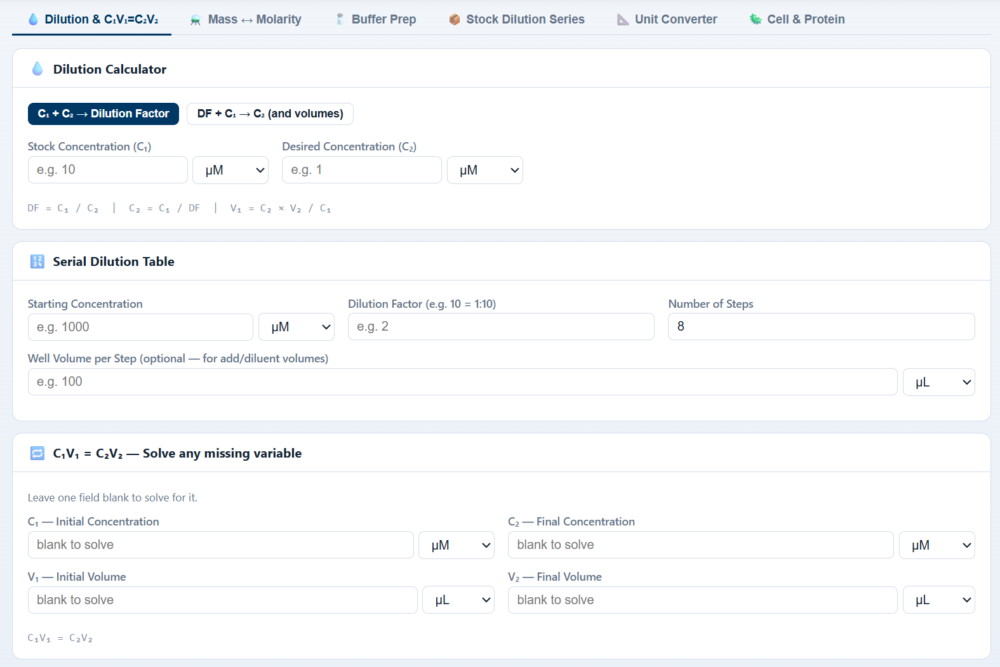
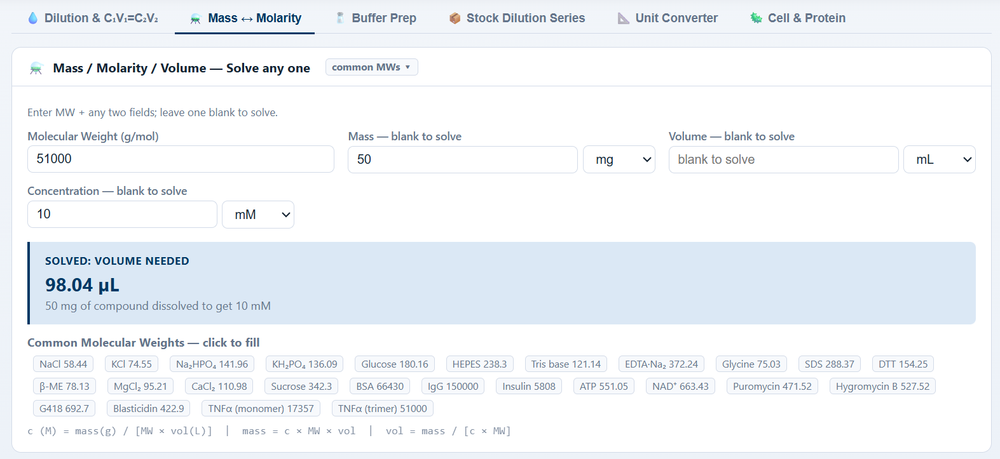
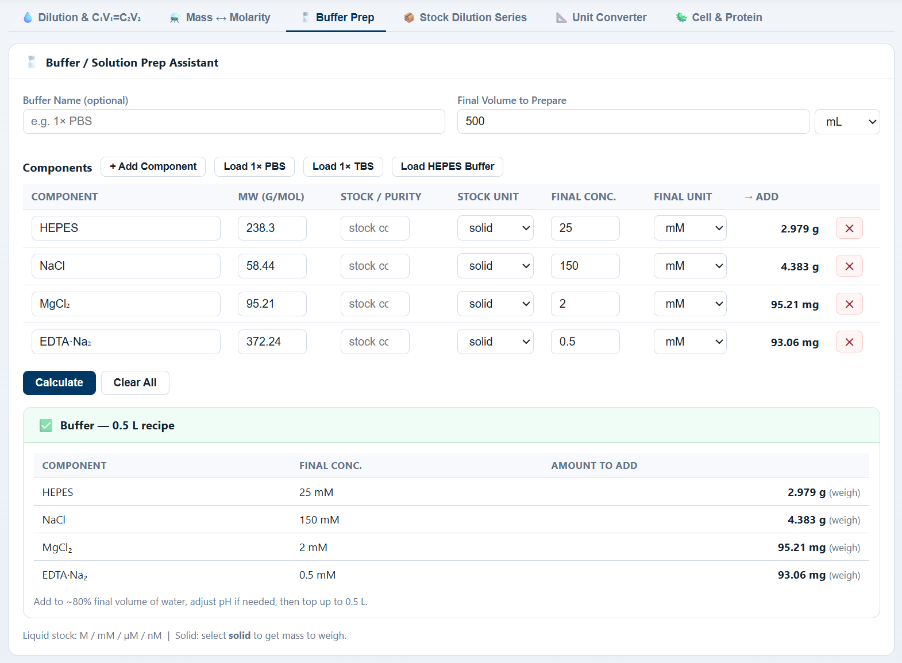
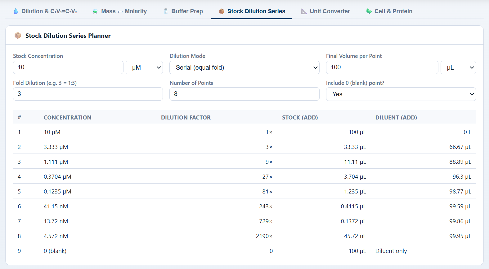
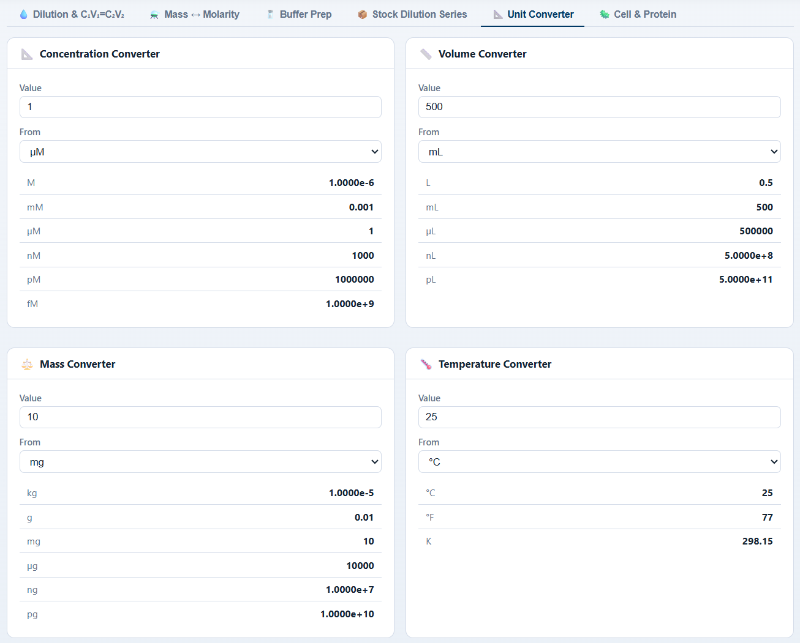
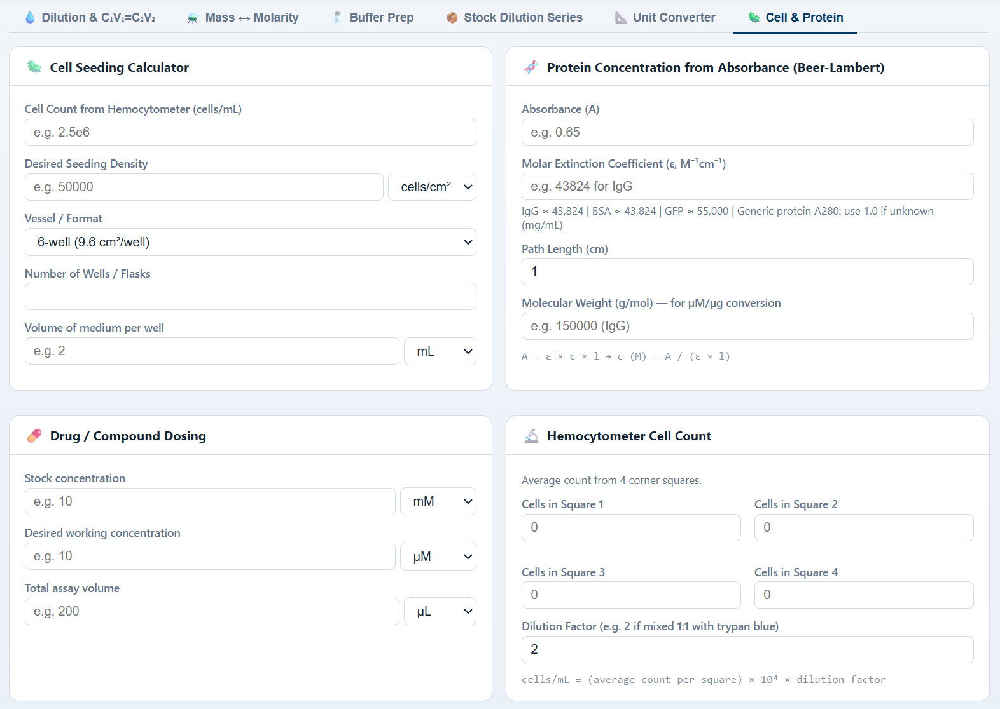

1How it works
Step 1
Pick a tab
Six modules across the top: Dilution, Mass↔Molarity, Buffer Prep, Stock Dilution Series, Unit Converter, Cell & Protein.
Step 2
Enter values, pick units
Each numeric field has a unit dropdown (M / mM / µM / nM; mg / µg / ng; mL / µL; °C). Common molecular weights are one-click chips.
Step 3
Solve any missing variable
Leave one field blank — dilution, mass↔molarity and Beer–Lambert solvers infer it from the rest, with the formula shown beneath.
Step 4
Copy recipe or table
Generated buffer recipes, dilution series tables and converted values are copy-ready for protocol notes or a worksheet.
2Preview
Dilution & C₁V₁ = C₂V₂
Three solvers in one tab: stock+desired → dilution factor, DF+stock → final concentration with volumes, and the classic C₁V₁ = C₂V₂ “leave one blank” solver. Built-in serial dilution table generator handles starting concentration, fold and number of steps in one go.

Mass ↔ Molarity
Enter MW + any two of mass / volume / concentration; the fourth is solved automatically. A library of common molecular weights (NaCl, KCl, HEPES, IgG, ATP, antibiotics, cytokines…) fills the MW field with one click.

Buffer prep assistant
Build a buffer component-by-component: name, MW, stock / purity, final concentration. One-click presets for 1× PBS, 1× TBS and HEPES buffer; mixed liquid (M / mM / µM / nM) and solid (→ mass to weigh) stocks are handled in the same table.

Stock dilution series planner
Plan a full dose response: stock concentration, fold dilution, number of points, final volume per point and an optional “include 0” blank. Switch between serial (equal-fold) and direct dilution modes in a single dropdown.

Unit converters
Concentration, volume, mass and temperature converters side by side — pick “From” unit, type a value, and every other unit updates simultaneously. No more juggling factors of 1000 in your head.

Cell & protein helpers
Four bench staples in one tab: cell seeding (count + density + vessel), drug / compound dosing (stock → working volume), Beer–Lambert protein concentration from absorbance with built-in extinction coefficients (IgG, BSA, GFP…), and a 4-square hemocytometer counter.
